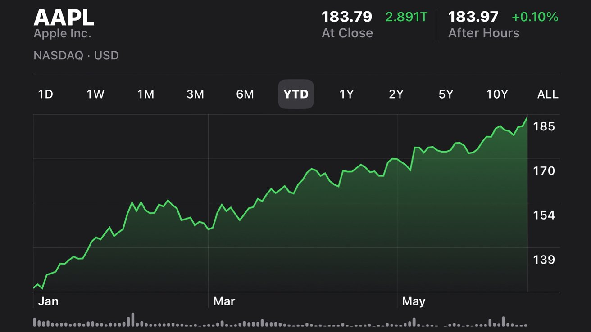

Quantitative Economics & Data Analytics
Grace Ngo.
Working at the intersection of data science, machine learning, and econometrics. I transform complex data into clear, actionable insights that support strategic, evidence-based decision-making.

Quantitative Economics & Data Analytics
Working at the intersection of data science, machine learning, and econometrics. I transform complex data into clear, actionable insights that support strategic, evidence-based decision-making.

Key Coursework: Statistical & Machine Learning, Data Systems & Management, Data Visualization, Advanced Probability & Statistics, Econometrics, Object-Oriented Design, Philosophy of Data.
Enhanced institutional data integrity and reporting efficiency by cleaning large datasets, building analytical tools, and delivering data-driven insights for academic and compliance initiatives.
Automated financial analysis and built interactive dashboards to help clients optimize operations, forecast growth, and uncover cost-saving opportunities.
Supported strategy and ESG projects by conducting market and financial analysis, benchmarking industry leaders, and delivering actionable recommendations to improve client performance.
Explored genre trends and production patterns using scalable SQL-driven analytics and Python visualization.
Designed a multi-branch library schema demonstrating data integrity enforcement, CRUD operations, and CTAS reporting.

Built a reproducible pipeline integrating external market data with AAPL stock prices for insight generation.
Developed a structured retail transaction database to uncover customer behavior patterns and category performance.
I'm open to new opportunities in analytics, data science, and business intelligence — feel free to reach out.